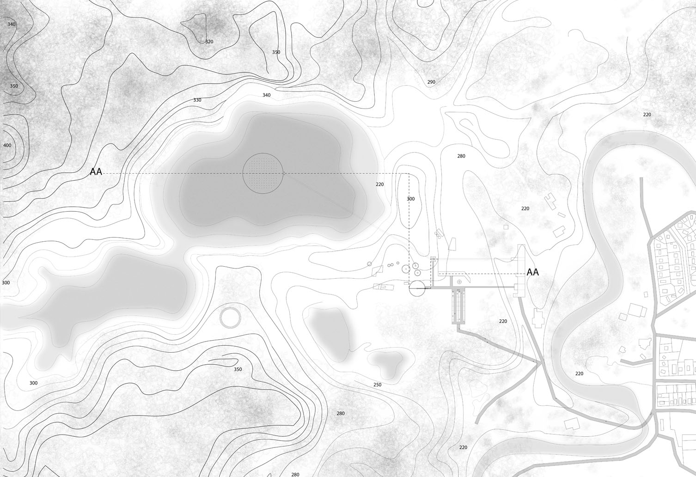
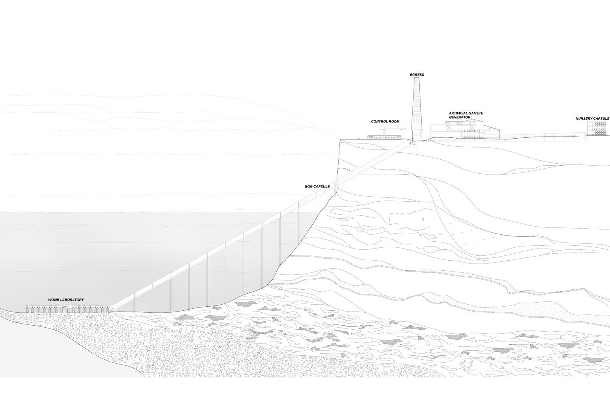
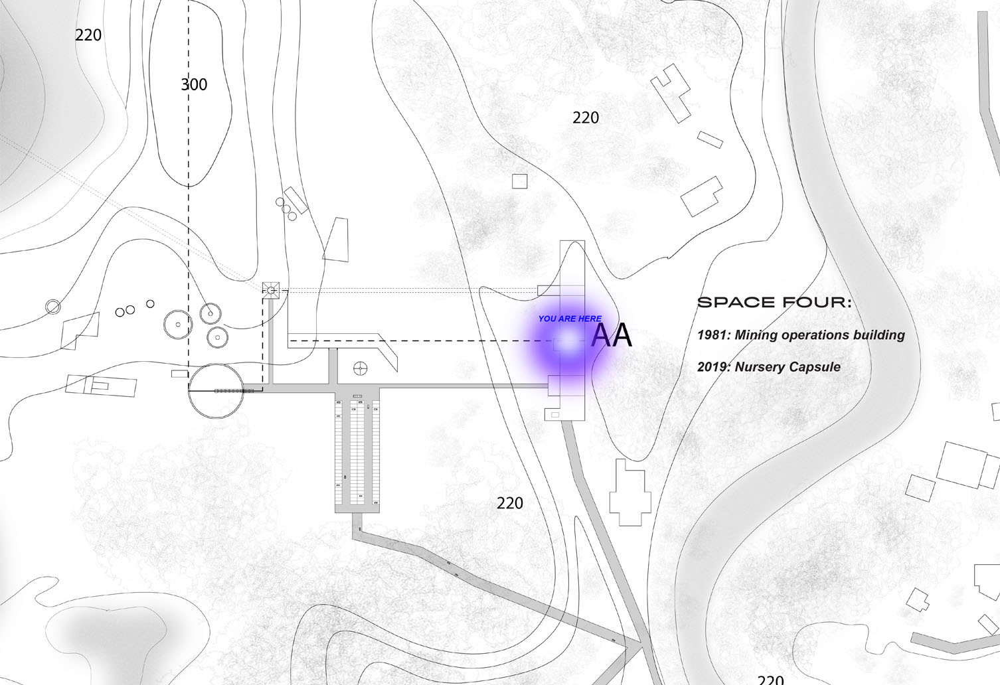
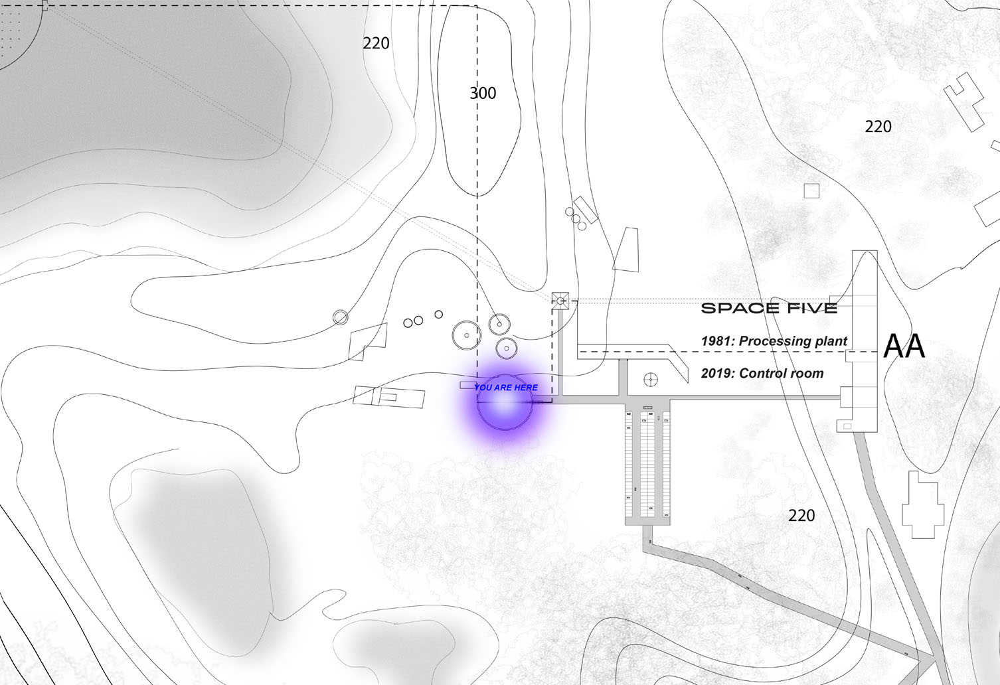
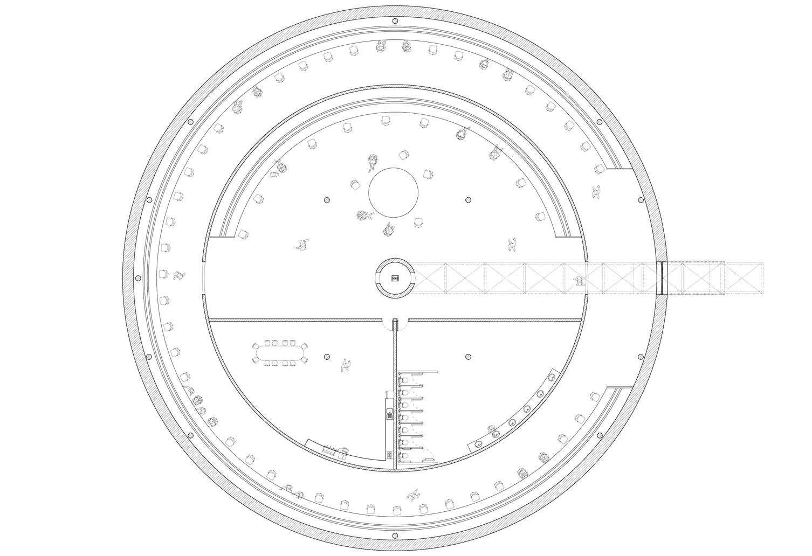

1
1






In Vitro, 2018
How can spatial practice facilitate a new speculation on the impact of artificial reproduction on gender binaries?
In vitro proposes an artificial alternative to reproduction through spatial practice. The reproductive journey unfolds through a speculative narrative that enters the science fiction realm. Through a social commentary, the implications of advanced reproductive science and technology are deliberated to generate new knowledge.
The concept stems from an intersect of feminist and ecological theory to investigate male/female, production/reproduction and human/non-human binaries. Research has been drawn from reproductive biotechnologies to propose two speculative mechanisms — an Artificial sex cell generator and Artificial womb. The proposition utilises the existing architecture of abandoned Mount Morgan Mine QLD in constructing a non-binary reproductive program to deliver human offspring.
This research proposal predicts a world that is perhaps a few years away from today. What will happen when the artificial sex cell and womb arrives?
These biotechnologies enable same sex couples, singles and infertile parent’s reproductive possibilities. The DNA of a human can be transformed into an artificial sex cell and then fertilised, birthed from an artificial womb. This technology could rewrite heteronormative values by creating new radical definitions of a parent and family. Could artificial birthing potentially blur the differences between the sexes in human biology? The proposal directly asks us to question who benefits from these reproductive technologies. Will artificial wombs liberate some and alienate others? Who is developing this technology? Does this technology reduce the reproductive power from women and place It in the hands of the patriarchy? The technology enables women to work throughout gestation. Artificial wombs provide a potential solution for women with uterine abnormalities and women who are naturally unable to conceive. In-vitro technology could also reduce the implications with pregnancy as it would eliminate pregnancy risks for women’s health and prevent the lives of premature babies.
My exegesis utilised the design-research methods of; drawing, photomontage, narrative, inventory, case study, scenario, model making, material investigation, site mapping, diagrams, film and visualisations to deliver a highly programmatic and systematic spatial program.
Spatial practice serves a platform to raise a consciousness that concerns the direction of in vitro biotechnologies.
In vitro proposes an artificial alternative to reproduction through spatial practice. The reproductive journey unfolds through a speculative narrative that enters the science fiction realm. Through a social commentary, the implications of advanced reproductive science and technology are deliberated to generate new knowledge.
The concept stems from an intersect of feminist and ecological theory to investigate male/female, production/reproduction and human/non-human binaries. Research has been drawn from reproductive biotechnologies to propose two speculative mechanisms — an Artificial sex cell generator and Artificial womb. The proposition utilises the existing architecture of abandoned Mount Morgan Mine QLD in constructing a non-binary reproductive program to deliver human offspring.
This research proposal predicts a world that is perhaps a few years away from today. What will happen when the artificial sex cell and womb arrives?
These biotechnologies enable same sex couples, singles and infertile parent’s reproductive possibilities. The DNA of a human can be transformed into an artificial sex cell and then fertilised, birthed from an artificial womb. This technology could rewrite heteronormative values by creating new radical definitions of a parent and family. Could artificial birthing potentially blur the differences between the sexes in human biology? The proposal directly asks us to question who benefits from these reproductive technologies. Will artificial wombs liberate some and alienate others? Who is developing this technology? Does this technology reduce the reproductive power from women and place It in the hands of the patriarchy? The technology enables women to work throughout gestation. Artificial wombs provide a potential solution for women with uterine abnormalities and women who are naturally unable to conceive. In-vitro technology could also reduce the implications with pregnancy as it would eliminate pregnancy risks for women’s health and prevent the lives of premature babies.
My exegesis utilised the design-research methods of; drawing, photomontage, narrative, inventory, case study, scenario, model making, material investigation, site mapping, diagrams, film and visualisations to deliver a highly programmatic and systematic spatial program.
Spatial practice serves a platform to raise a consciousness that concerns the direction of in vitro biotechnologies.